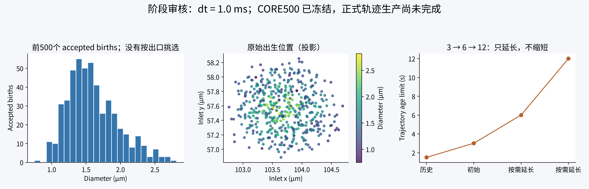
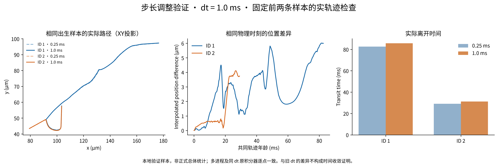

CORE500 在轨迹执行前冻结；NEW流场核验通过；旧回归165项通过；历史正式上限核实为1.5秒。
用户已将名义步长改为 1.0 ms；旧 0.25 ms 结果单独归档，不计入新步长正式样本。当前阶段尚不宣称完成正式500条。下一步比较固定24条轨迹的1/2/4/6/8/12/16 workers，再启动连续扩样。

新增永久测试23项通过；相同样本的1与2 workers科学结果一致；新调度器与原积分器在同一1.0 ms步长下逐点一致。服务器固定24条样本的worker scaling仍在运行。
